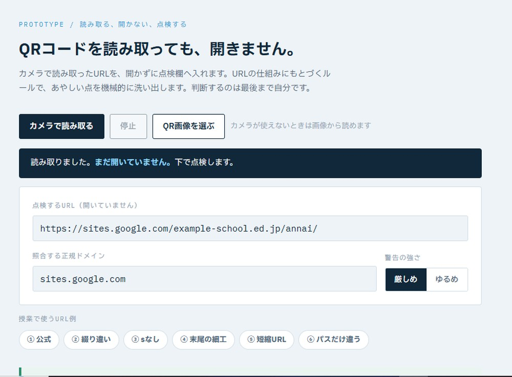
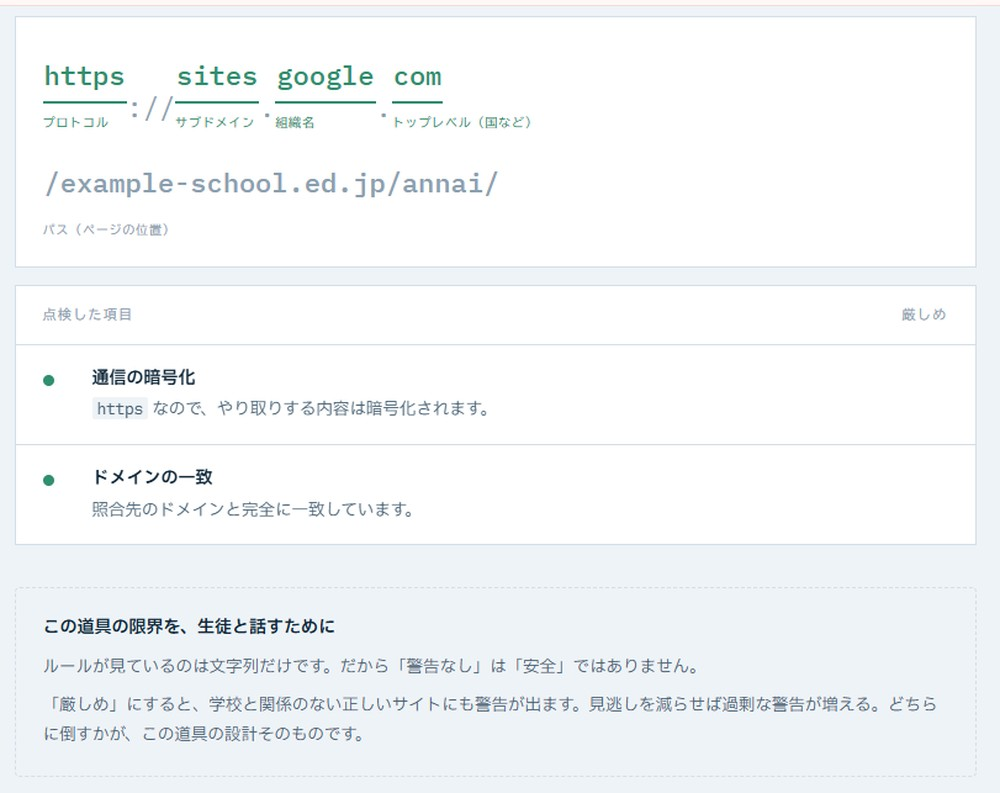
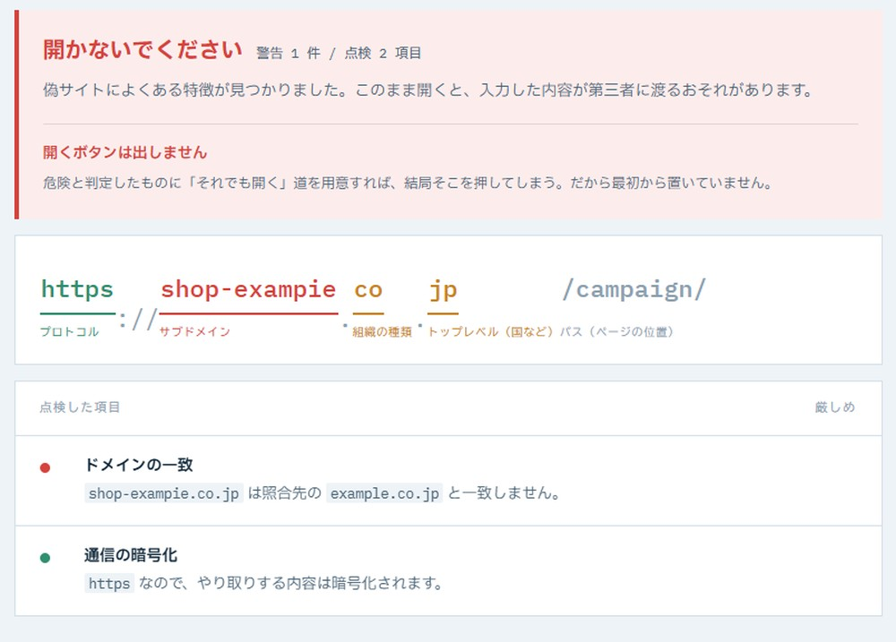
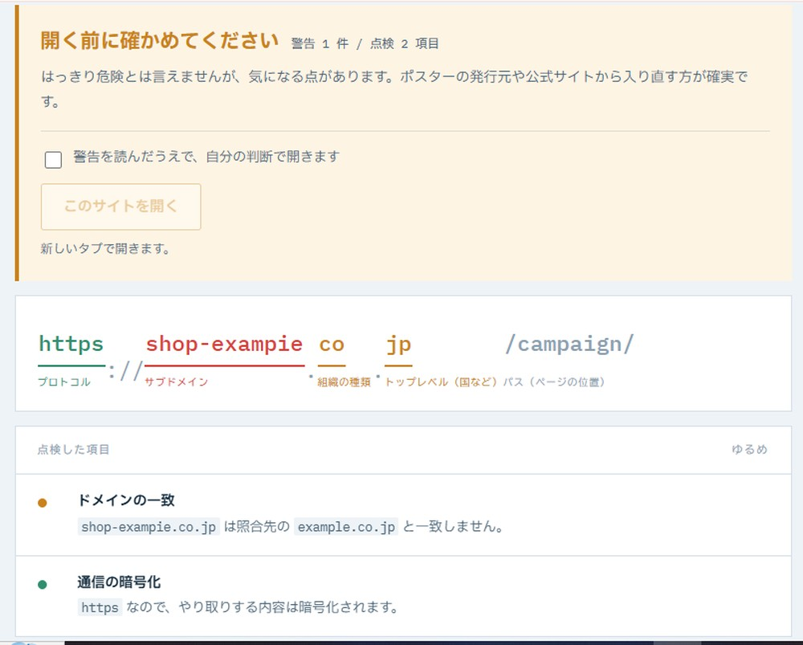

ある中学校の公開授業を参観しました。技術科、情報の技術の単元です。
本時の課題はこうでした。デザインがまったく同じ学校案内のポスターを数種類用意し、QRコードだけを差し替えておく。そのうち本物の公式サイトにつながるのはひとつだけ。生徒は読み取ったURLを見比べて、どれが本物かを判断する。
よく考えられた授業だと思いました。「怪しいサイトは開かない」という気持ちの話ではなく、URLの構造という技術的な根拠で判断させる。技術科が扱うべき内容そのものです。
ただ、参観しながら、別のことを考えていました。
この作業、面倒だよな
生徒がやっているのは、読み取ったURLを画面に出して、正しいドメインと一文字ずつ見比べる作業です。たとえば、こういう文字列を見比べます。
https://shop-exampIe.co.jp/campaign/
小文字の l（エル）ではなく、大文字の I（アイ）が混ざっている
気づけたでしょうか。並べて見比べても、見つけるのは簡単ではありません。授業では時間を取って、拡大して、班で相談しながら探します。それでも見落とす生徒はいます。
そして、ここからが本題です。
この作業を、日常でやる人がいるだろうか
街のポスターでQRコードを読み取ったとき、表示されたURLを一文字ずつ確かめてから開く。そんなことをする中学生が、どれだけいるでしょうか。大人でもやらないと思います。そもそも多くのスマートフォンでは、読み取った瞬間にサイトが開いてしまいます。確かめる場面そのものが、存在していません。
授業で育てているのは「見分けられる力」です。それは必要です。けれど、力があることと、日常で実際に使うことは別です。使う場面がなければ、力は使われないまま終わります。
だとすれば、問いはこうなるのではないか。見分けられるようにするのではなく、見分けなくても済むようにできないか。
読み取りと表示の間に、一拍置く
そこで試作したのが、QRコードを読み取っても「開かない」ツールです。

カメラでQRコードを読み取ると、URLは点検欄に入ります。それだけです。サイトは開きません。照合したい正規ドメインを入れておくと、URLの構造を分解したうえで、気になる点を機械的に洗い出します。

この分解表示が、授業の作業を肩代わりする部分です。どこが組織名で、どこがパスなのか。目で追って切り分けていた作業を、画面が代わりに済ませます。
同じURLでも、答えが変わる
このツールには、警告の強さを切り替えるボタンがあります。「厳しめ」と「ゆるめ」です。同じURLを点検しても、設定によって結果が変わります。


厳しめでは、開くボタンを置いていません。危険と判定したものに「それでも開く」という道を用意すれば、結局そこを押してしまうからです。ゆるめでは、警告を読んだうえでのチェックを経て、自分の判断で開けます。
どちらが正しいという話ではありません。厳しくすれば、まったく問題のない正しいサイトにも警告が出ます。ゆるくすれば、危険なものを見逃します。見逃しを減らせば過剰な警告が増え、過剰な警告を減らせば見逃しが増える。この二つは同時に成り立ちません。
ここを生徒と話したいと考えています。安全をつくる技術には必ずこの手の線引きがあり、どこに引くかは誰かが決めている。自動ブレーキの効き具合も、迷惑メールの振り分けも、同じ構造です。「設計には、正解のない判断が含まれている」ことを、自分の手で両方試しながら実感できる教材になるはずです。
この道具にできないこと
画面の下部に、こう書いてあります。ルールが見ているのは文字列だけであること。だから「警告なし」は「安全」ではないこと。
この但し書きは、おまけではなく本体だと思っています。道具を渡すとき、できることだけを説明すれば、使う側はそれを万能だと思います。何ができないかを一緒に渡さなければ、かえって危険になる。警告が出ないことを安全の証明だと受け取った生徒は、以前より無防備になります。
| 見ているもの | 見ていないもの |
|---|---|
| 通信が暗号化されているか（https かどうか） | そのサイトが実際に何をするか |
| 照合先のドメインと一致しているか | そのドメインを誰が持っているか |
| 国を表す末尾が違っていないか | 過去に被害の報告があるか |
| 紛らわしい文字が混ざっていないか | リンク先からさらに転送されないか |
本当に作りたいもの
ここまで書いてきて、正直に認めておかなければならないことがあります。
このツールは、生徒が意識して開かないと使えません。いつものカメラでQRコードを読み取れば、やはりそのままサイトへ飛びます。日常の場面を変えるという当初のねらいから見れば、まだ届いていません。
では、本当に作りたいものは何か。カメラそのものに、この一拍が組み込まれていることです。読み取ったら、開く前に一度止まる。点検の結果が出る。そのうえで人が決める。別のアプリを開く必要はなく、誰もが使っている機能の中に、はじめからその工程がある。
そう考えると、この試作品は未完成のアプリというより、仕様の提案なのだと思います。「QRリーダーには、読み取りと表示の間に点検の工程が要るのではないか」という提案を、動く形にして示したもの。実際、製品として成り立つのではないかとも考えています。
技術科が問うべきこと
技術科の見方・考え方は、既存の技術を評価し、よりよいものへ改良・応用していくところまでを含みます。だとすれば、授業で立てる問いは「どれが本物か見分けなさい」で終わってよいのでしょうか。
その先に、こういう問いがあるはずです。見分けなければならない状況そのものを、技術で変えられないか。
見分ける力を育てることと、見分けなくても済む仕組みを作ること。どちらか一方ではなく、両方が要ります。前者は授業で、後者は設計で。そして後者を考えることもまた、技術科の学習だと思うのです。
公開授業を参観して持ち帰ったのは、指導法ではなく、この問いでした。